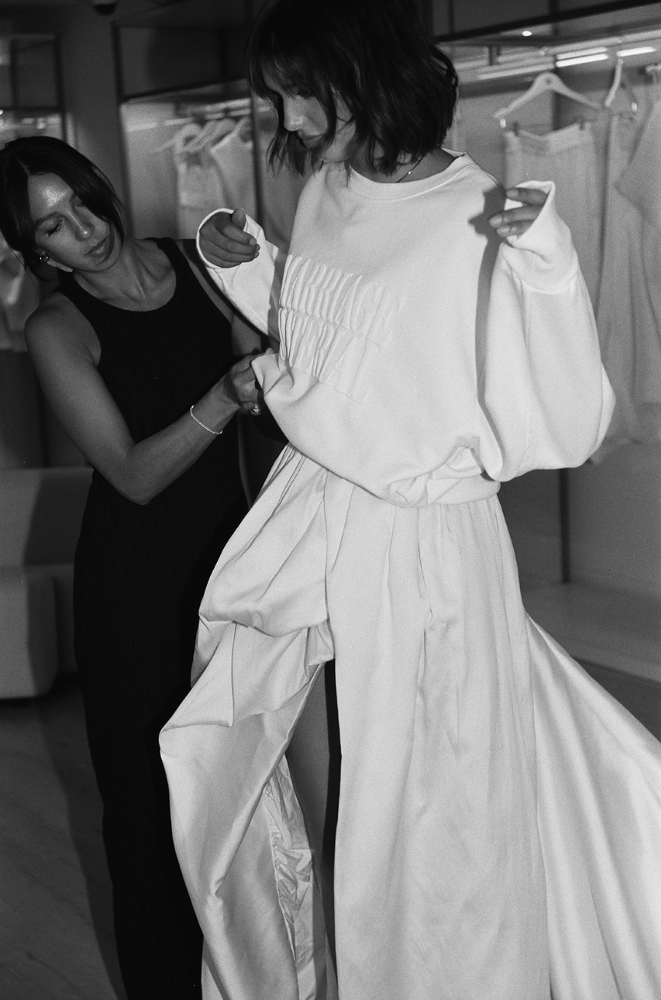

“She creates entire worlds — her looks are sculptural, modern, and deeply intentional.” — The Wed
Sam Ruiz is a bridal fashion stylist and the founder of It's Giving Bridal.
Sam's industry relationships span private vintage archives, independent ateliers, couture houses, and emerging designers. Sam specializes in styling multi-day wedding celebrations and editorial and campaign styling for bridal brands and creatives. She is known for her ability to translate a client's personal style into a complete fashion story.
West Coast based. Available worldwide.
